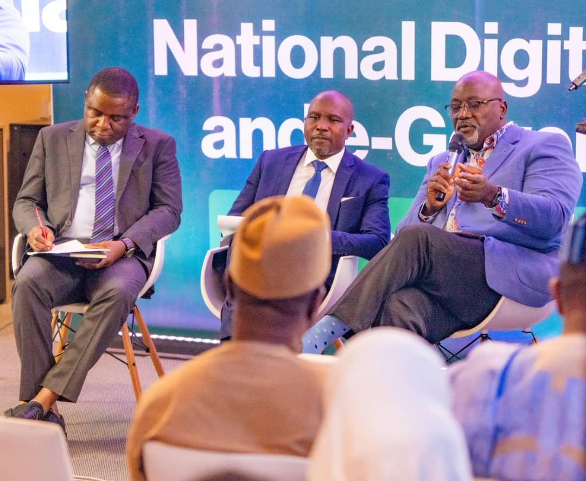
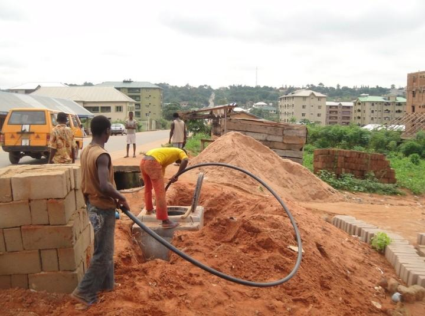
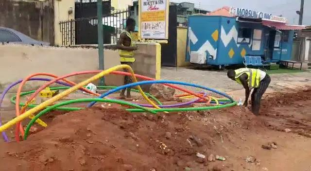
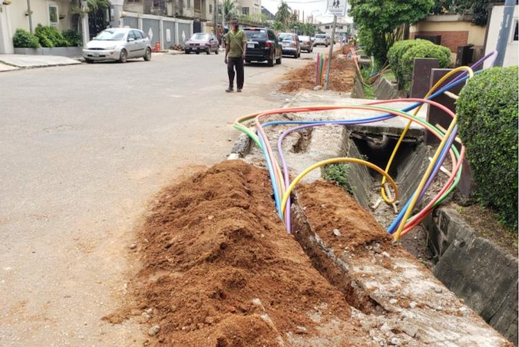
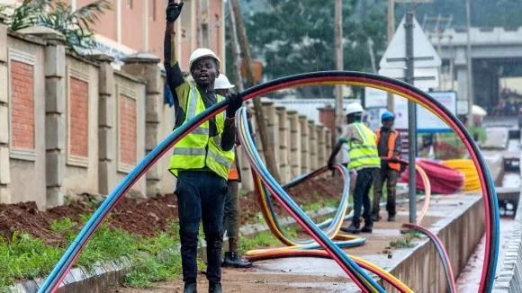
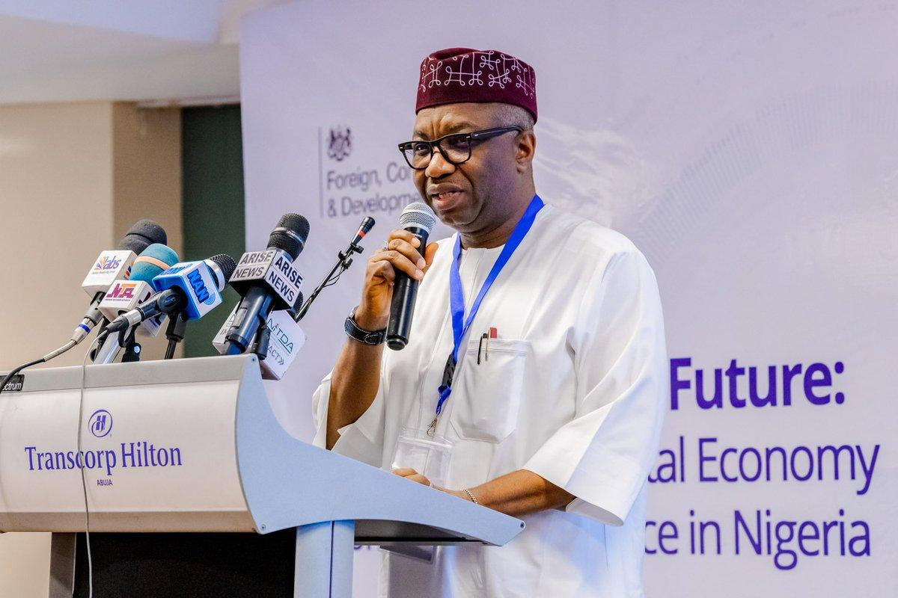
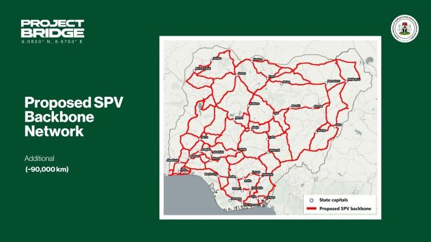
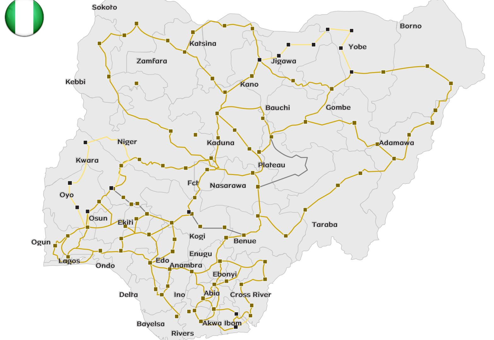

Nigeria’s Digital Infrastructure Expansion: Building a Connected Future
Posted on 10th August, 2026.
Nigeria is accelerating efforts to expand its digital infrastructure as the country seeks to improve internet connectivity, support businesses, create jobs and strengthen its growing digital economy.
From nationwide fibre-optic networks and broadband expansion to rural connectivity and digital services, the country is investing in infrastructure designed to connect more Nigerians to the digital world.

Major Fibre-Optic Expansion Underway
One of the most significant developments is Project BRIDGE — Building Resilient Digital Infrastructure for Growth.
The initiative is designed to deploy at least 90,000 kilometres of fibre-optic infrastructure across Nigeria. The Federal Ministry of Communications, Innovation and Digital Economy says the project is intended to cover all 36 states and the Federal Capital Territory while connecting more than 770 local government areas.
The expansion is expected to provide the backbone needed for faster and more reliable broadband services.
Nigeria's existing national fibre backbone is expected to grow from approximately 30,000 kilometres to about 120,000 kilometres through the wider programme. The African Development Bank says the infrastructure is intended to connect schools, healthcare facilities, rural communities, agro-industrial areas and commercial centres.

Investment Is Driving Digital Connectivity
The scale of the planned infrastructure expansion has attracted support from international development and financial institutions.
In April 2026, the African Development Bank approved a $200 million loan for Nigeria's Digital Value Chain Infrastructure for Boosting Employment project, supporting the expansion of the country's fibre backbone, digital skills and job creation.
Earlier in 2026, the European Bank for Reconstruction and Development approved a $100 million investment for Project BRIDGE, while the European Union provided a €22 million grant. This was added to previously secured World Bank financing of $500 million.
The financing demonstrates the growing importance of digital infrastructure to Nigeria's economic development.

Expanding Connectivity Beyond Major Cities
A major challenge for Nigeria's digital economy is the gap between urban and rural connectivity.
While major cities have benefited from expanding mobile networks, broadband services and technology businesses, many communities still face limited or expensive internet access.
The government's Nigeria Universal Communication Access Project (NUCAP) is designed to address some of these gaps. The programme plans to deploy 3,700 communications sites across the country, with a focus on underserved and unserved communities.
The sites are expected to support rural broadband, public Wi-Fi and digital learning services, alongside associated energy infrastructure.

What Digital Infrastructure Means for Nigerians
Digital infrastructure is more than internet cables and mobile phone towers. It provides the foundation for many activities that are increasingly important to everyday life.
Better connectivity can support:
- Online education and digital learning
- Remote work and freelancing
- E-commerce and online businesses
- Digital banking and financial services
- Telemedicine and healthcare services
- Government digital services
- Technology startups
- Online entertainment and communication
- Agricultural technology
- Artificial intelligence and other emerging technologies
For small businesses, reliable internet can make it easier to market products online, communicate with customers, accept digital payments and reach markets outside their immediate communities.
Opportunities for Young Nigerians

Nigeria has a large and increasingly technology-oriented youth population. Improved connectivity could create more opportunities for young people to participate in the digital economy.
With reliable broadband, young Nigerians can learn programming, graphic design, digital marketing, data analysis, cybersecurity, artificial intelligence and other technology-related skills.
Digital infrastructure can also help businesses employ workers remotely, allowing people to provide services to companies within Nigeria and abroad without necessarily relocating.
The government's wider digital infrastructure strategy also includes digital skills development and research initiatives intended to strengthen Nigeria's technology ecosystem.

Supporting Nigeria’s Digital Economy
Nigeria's technology ecosystem has become an increasingly important part of the country's economy.
However, startups and established technology companies need dependable infrastructure to operate effectively. Internet disruptions, inadequate fibre coverage, high connectivity costs and unreliable electricity can increase operating costs.
Expanding fibre networks can therefore provide a stronger foundation for technology companies, data centres, cloud services and other digital businesses.
The importance of infrastructure is becoming even greater as artificial intelligence and other data-intensive technologies expand. A recent IMF analysis reported that better electricity, internet connectivity and digital skills could significantly increase the potential economic benefits of AI across Sub-Saharan Africa.

Challenges That Still Need Attention
Despite the progress, Nigeria still faces several challenges in achieving universal and affordable digital connectivity.
One major issue is electricity supply. Telecommunications infrastructure requires reliable power to operate efficiently, particularly in areas where grid electricity is inconsistent.
Another challenge is the cost of deploying infrastructure across Nigeria's large geographical area. Fibre networks, telecommunications towers and other equipment require substantial investment and maintenance.
Affordability also remains important. Building infrastructure alone does not guarantee that every Nigerian will be able to afford high-speed internet.
The government has therefore emphasised partnerships with private investors and telecommunications companies as part of its strategy to expand infrastructure and improve access. Project BRIDGE is structured around a public-private partnership model.
A More Connected Nigeria

Nigeria's digital infrastructure expansion represents an important part of the country's broader economic transformation.
The planned fibre rollout, rural connectivity projects and investments from international development institutions could help create a stronger foundation for digital businesses, education, healthcare, government services and innovation.
If the infrastructure projects are successfully implemented, more Nigerians — particularly people living in underserved communities — could gain access to opportunities created by the digital economy.
Conclusion
Nigeria is entering an important phase in its digital development. The planned expansion of fibre-optic infrastructure, rural communications sites and broadband networks could significantly improve the country's connectivity landscape.
Project BRIDGE's planned 90,000-kilometre fibre deployment, combined with rural connectivity programmes such as NUCAP, represents a major effort to close Nigeria's digital divide.
The success of these efforts will depend not only on funding and construction, but also on reliable electricity, affordable internet, effective maintenance, private-sector participation and the development of digital skills.
For millions of Nigerians, however, the ultimate goal is simple: faster, more affordable and more reliable access to the internet and the opportunities that come with it.